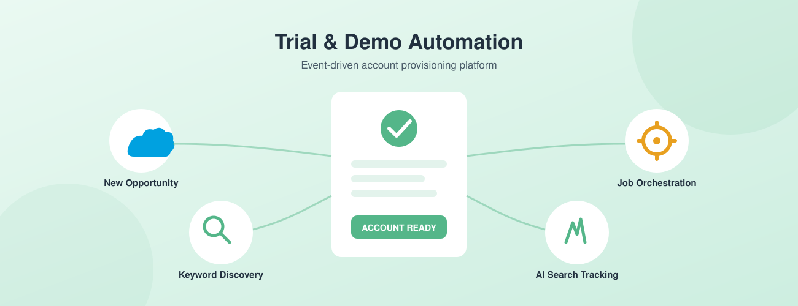
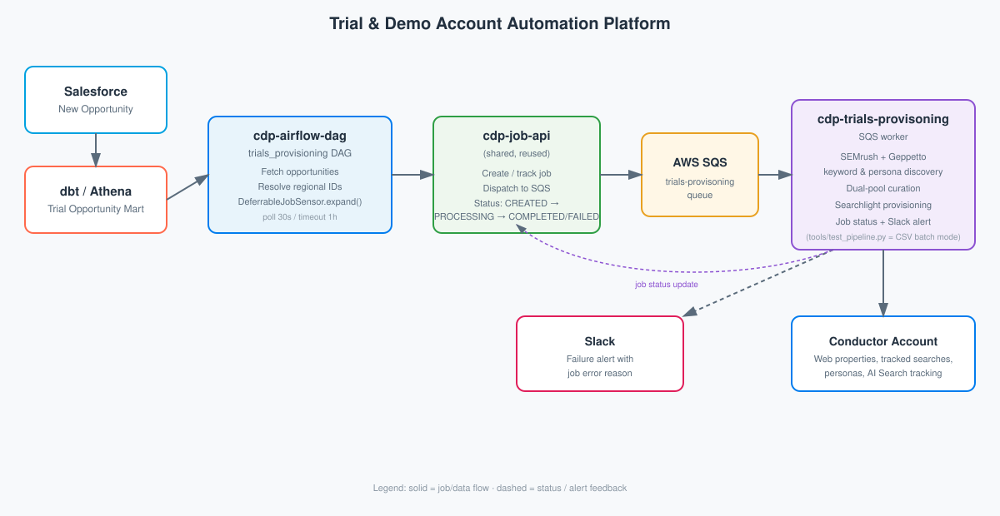

Case Study: Trial & Demo Account Automation Platform
Built an event-driven automation platform that provisions fully configured Conductor trial and demo accounts end-to-end — from a new Salesforce opportunity to a ready-to-demo account with competitors, curated tracked-search keywords, personas, and AI Search tracking — with zero manual setup. The platform extends the existing Airflow/Job-API microservices infrastructure with a new deferrable DAG and a dedicated SQS-driven provisioning worker.

Conductor GmbH
Industry: SaaS / Marketing Technology
Size: 200+
Website: conductor.com
Project Date: Dec 2025 - Mar 2026
Setting up a Conductor trial or demo account was a manual, multi-hour process for Sales Engineering: researching competitors, hand-picking tracked-search keywords, configuring AI Search topics/personas, and provisioning the account itself. This project automated that entire workflow, triggered directly off new Salesforce opportunities and reusing the job-orchestration platform already built for the Onehouse data pipelines.
Project Requirements
- Automatically detect new trial/demo opportunities from Salesforce via the dbt/Athena data mart
- Resolve per-domain regional and language metadata to support non-US prospects
- Discover relevant competitors and curate tracked-search keywords without manual research
- Auto-generate topics, brand variations, and buyer personas per prospect for AI Search tracking
- Provision a fully configured Conductor account (web properties, tracked searches, AI Search) with no manual steps
- Support both automated (event-driven) and manual/bulk (CSV batch) provisioning modes for demos
- Reuse the existing Airflow + Job API orchestration platform instead of building new infrastructure
- Alert the team on Slack immediately if provisioning fails for any account
The Goal
Eliminate the manual bottleneck in trial and demo account setup so Sales Engineering and Solutions Consulting could spend time on prospect conversations instead of spreadsheet research and manual account configuration. Every new opportunity should result in a demo-ready Conductor account — with relevant competitors, keywords, and AI Search tracking already configured — within minutes of being created in Salesforce.
The technical goal was to build this as a thin extension of the existing microservices platform rather than a bespoke pipeline: reuse the same Job API, deferrable-sensor pattern, and SQS-based worker dispatch already proven on the Onehouse data pipelines project, so the new capability could ship quickly and be operated the same way as everything else on the platform.
The Solution
The platform is composed of one new orchestration DAG and one new provisioning microservice, both plugged into the shared Job API that already routes work to services via SQS. Airflow discovers opportunities and hands off one job per account; a dedicated worker service does all of the heavy lifting — discovery, keyword curation, and account provisioning — and reports status back through the same job lifecycle used across the rest of the platform.
System Architecture

- cdp-airflow-dag (trials_provisioning DAG): Queries the dbt/Athena mart
for new trial opportunities, resolves regional metadata per domain, and dynamically maps
one
DeferrableJobSensortask per opportunity — the same deferrable pattern used by the Onehouse pipelines, so a single worker can track hundreds of in-flight provisioning jobs without blocking Airflow slots. - cdp-job-api (shared, reused): Receives job creation calls from the
DAG, writes job records, and dispatches an SQS message to the
cdp-trials-provisoningqueue. No changes were needed to this service — the new workflow is just another consumer of the existing job contract. - cdp-trials-provisoning (new worker): SQS-driven service that performs competitor/keyword discovery, topic/persona resolution, keyword curation, and the full Conductor account provisioning sequence, then reports success or failure back through the Job API.
Flow: Salesforce opportunity → dbt/Athena mart → Airflow DAG → Job API → SQS → cdp-trials-provisoning worker → Conductor account (Searchlight API) → job status update → Slack alert on failure.
The Challenge
Manual, Inconsistent Setup: Provisioning a trial or demo account required a person to research the prospect's competitors, hand-pick tracked-search keywords, decide on relevant topics and personas, and click through account setup in the Conductor UI. Quality varied by who did the setup and how much time they had, and the process didn't scale as opportunity volume grew.
Global & Multi-Locale Prospects: Prospects span multiple languages and countries, but SEO tracking configuration (search engine, language, location, locale) is region-specific. The pipeline needed to resolve the correct regional IDs per domain automatically rather than defaulting everything to US/English.
Keyword Quality vs. Relevance: Keywords selected purely by search volume often didn't reflect where a prospect actually ranks, while keywords selected purely by current ranking missed high-value growth opportunities. Brand-name keyword expansion could also pull in noisy, unrelated results for short or ambiguous brand acronyms.
Two Provisioning Modes: The team also needed a way to provision accounts in bulk for outbound demo campaigns (e.g., a curated list of prospects) — separate from the automatic, event-driven flow — without duplicating the provisioning logic.
The Approach & Solution
I designed and built the provisioning worker and the Airflow DAG that drives it, reusing the Job API and deferrable-sensor infrastructure already in place.
1. Opportunity Discovery & Regional Resolution (Airflow)
- dbt/Athena Mart Query: The DAG queries a dbt-modeled Athena table for new trial opportunities each run, pulling account name, Salesforce ID, Clearbit-enriched domain, and owning users
- Language Detection & Filtering: Calls Geppetto to detect each domain's ISO language/country before dispatch, skipping accounts with missing domains or unsupported languages rather than failing silently downstream
- Regional ID Resolution: Resolves rank source, language, location, and
locale IDs per domain via targeted Athena lookups (
rank_source_ro,language_ro,locale_ro), with safe defaults if a lookup misses - Dynamic Task Mapping: Uses
DeferrableJobSensor.expand()to fan out one job per opportunity, with a 30-second poll interval and 1-hour timeout — identical configuration to the Onehouse pipelines DAGs
2. Competitor & Keyword Discovery (cdp-trials-provisoning)
- Geppetto Integration: Resolves topics, brand name variations, and buyer personas for the domain; Salesforce-provided topics/competitors take priority, with Geppetto always queried at full capacity so deduplication never leaves empty slots
- SEMrush Dual-Pool Keyword Strategy:
- Pool A (MSV-optimized): Keywords expanded from topics and brand terms, ranked by search volume, with branded vs. non-branded slot allocation and similarity-based deduplication (SequenceMatcher ratio > 0.90 discarded)
- Pool B (domain-ranked): Keywords the domain already ranks for, pulled across configurable rank-position zones for a representative spread
- Merge: Pools are deduplicated by normalized phrase, preferring Pool B (has real rank data), yielding up to 200 curated keywords per account
- Smart Groups: Curated keywords are segmented into branded / non-branded smart groups mapped back to their originating topics for tracked-search organization
3. Conductor Account Provisioning
- Account Creation: Calls the Searchlight API to create a TRIAL or DEMO account with the configured subscription plan, allocation package, product IDs, and trial length (or non-expiring for demos)
- Web Properties: Creates the client web property plus competitor web properties, wired to the resolved rank source
- Personas: Creates custom personas from Geppetto output and associates them with the web property, falling back to defaults when none are returned
- Tracked Searches: Uploads curated keywords with smart-group assignments, using the resolved locale and rank-source language for correct formatting
- AI Search Tracking: Configures topics, per-topic queries, and personas across multiple AI engines (Gemini, ChatGPT, Google AI Overview, Google AI Mode, Claude Sonnet)
4. Job Lifecycle & Failure Handling
- Status Reporting: Updates job status (CREATED → PROCESSING → COMPLETED/FAILED) back through the Job API at each stage, giving the same centralized visibility as every other job-driven service on the platform
- Slack Alerts: Sends a Slack notification with the failure reason the moment a provisioning run fails, instead of requiring someone to check Airflow logs
5. Manual Batch Runner
- CSV-Driven Bulk Provisioning: A local batch runner (
tools/test_pipeline.py) reuses the exact same provisioning code path outside of SQS, reading accounts from a CSV (e.g., a Fortune 500 prospect list) for one-off demo campaigns or config testing - Config-Driven: Account type, subscription plan, allocation package, keyword/topic/persona limits, and AI engines are all set via a single config block — no code changes needed to run a different provisioning profile
The Results
0
Manual Steps
Fully automated, event-driven provisioning
200
Curated Keywords
Per account, dual-pool strategy
5
AI Engines Tracked
Gemini, ChatGPT, Google AIO/AI Mode, Claude
2
Provisioning Modes
Event-driven & CSV batch runner
Technical Achievements
- Platform Reuse: Shipped a new, independently deployable provisioning capability without modifying the existing Job API or deferrable-sensor infrastructure — pure extension via a new DAG and a new SQS consumer
- Regional Coverage: Automatic domain-based language/region detection and Athena-backed ID resolution allow the pipeline to support international prospects without hardcoded defaults
- Keyword Quality: The dual-pool (MSV + domain-ranked) merge strategy balances growth-opportunity keywords with keywords the prospect already ranks for, improving demo relevance over single-signal selection
- Operational Safety: Centralized job status tracking and Slack alerting give immediate visibility into provisioning failures across every account
- Reusable Batch Tooling: The same provisioning logic powers both the automated pipeline and a config-driven CSV batch runner, avoiding duplicated business logic
Business Impact
The platform removed a recurring manual task from Sales Engineering's workload and made trial/demo account quality consistent regardless of who or what triggered provisioning. New opportunities detected in Salesforce now flow straight through to a demo-ready Conductor account without anyone opening a spreadsheet, and the same pipeline supports ad-hoc bulk provisioning for outbound campaigns through the batch runner.
Technical Deep Dive
Dual-Pool Keyword Curation
Pool A is built from topic and brand-term expansion via SEMrush, sorted by search volume, with a capped number of branded slots drawn from all candidates and remaining non-branded slots drawn only from topic-expansion candidates — this prevents noisy brand-expansion results (e.g., an ambiguous acronym returning unrelated gaming keywords) from crowding out topic-relevant keywords. Pool B is built from the domain's actual organic rankings, sampled across configurable rank-position zones for a representative spread of strong, medium, and weak rankings.
The two pools are merged by normalizing each phrase (lowercase, collapsed whitespace) and preferring the Pool B version on collision, since it carries real rank-position data. This produces up to 200 keywords per account that reflect both growth opportunity and current ranking reality.
Reusing the Deferrable Sensor Pattern
Rather than building new orchestration primitives, the trials_provisioning DAG uses the
same DeferrableJobSensor built for the Onehouse pipelines: it creates a job
via the Job API in about a second, then immediately defers to a trigger that polls job
status every 30 seconds in the triggerer process. This keeps hundreds of concurrent
provisioning jobs from consuming Airflow worker slots while they wait on external API calls.
Domain-to-Region Resolution
For each opportunity domain, Geppetto resolves ISO language/country codes, which are then used to look up rank source, language, location, and locale IDs from Athena config tables. Non-English domains are filtered out at the DAG level before a job is even created, and every Athena lookup falls back to safe US/English defaults if a query fails, so a single bad lookup can't take down the whole batch.
Project Info
- Client: Conductor GmbH
- Duration: ~4 months
- Role: Senior Data Engineer
- Year: Dec 2025 - Mar 2026